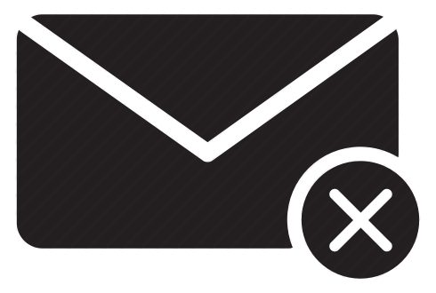

<div class="main-content">
  <div class="container-fluid">
    <div class='pageContainer'>
      <div class='contactsPanel'>
        <div class="topRow" *ngIf='contactsShown'>
          <h1>Contacts</h1>
        </div>
        <div class='contactsList' *ngIf='contactsShown && (user$|async).contacts.length > 0'>
          <div *ngFor='let contact of ((user$ | async ).contacts !== undefined) ? (user$ | async).contacts : null;'
            class='contactRow' (click)='openMessenger(contact)'>
            <div class='profilePic' [class.isOnline]="isOnline(contact.id)" [class.isOffline]="!isOnline(contact.id)">
              <!--  -->
              
            </div>
            <div class='name'>{{contact.fName}} {{contact.lName}}</div>
            <div class='tagline'>{{contact.tagline}}</div>
            <div class='messageIcon'>
              <mat-icon>message</mat-icon>
            </div>
          </div>
        </div>
        <div class='contactsList noContacts' *ngIf='contactsShown && (user$|async).contacts.length == 0'>
          <div>
            <mat-icon>sentiment_very_dissatisfied</mat-icon>
            <h1>No Contacts</h1>
          </div>
        </div>
        <mat-icon (click)='toggleContacts()'>{{(contactsShown)?'keyboard_arrow_left':'keyboard_arrow_right'}}</mat-icon>
      </div>

      <div class='messageArea'>
        <div class='topRow'>
          <h1>{{(selectedContact != null? selectedContact.fName + ' ' + selectedContact.lName:'Messages')}}</h1>
        </div>
        <div class='noMessages' *ngIf='!(selectedMessages.length > 0)'>
          <div>
            
            <h1>{{(selectedContact)?'No messages yet':'Select a contact to start messaging'}}</h1>
          </div>
        </div>
        <div class='messageContent' *ngIf='selectedMessages.length > 0' #messages [scrollTop]="messages.scrollHeight">
          <div *ngFor='let m of selectedMessages; let i = index'>
            <div class='divider' *ngIf="i == 0 || isBefore(m.timestamp, selectedMessages[i-1].timestamp) === true">
              <hr />
              <i>{{returnDate(m.timestamp)}}</i>
            </div>
            <div class="message" [class.sender]=' m.senderId==(user$ | async).id'>
              <p>{{m.content}}</p>
              <small>{{m.timestamp | date: 'HH:mm'}}</small>
            </div>
          </div>
          <div *ngIf="selectedContact !== undefined && !isOnline(selectedContact.id)" class="messageBox">
            <i>{{selectedContact.fName}} {{selectedContact.lName}} is currently offline. They will see this message
              when
              they come back online!</i>
          </div>
        </div>
        <form [formGroup]='messageForm'>
          <textarea class='form-control' formControlName="message" [disabled]='(selectedContact == null)'></textarea>
          <button class='btn btn-primary' (click)="this.sendMessage()" [disabled]='(selectedContact == null)'>
            <mat-icon>send</mat-icon>
          </button>
        </form>
      </div>
    </div>
  </div>
</div>
